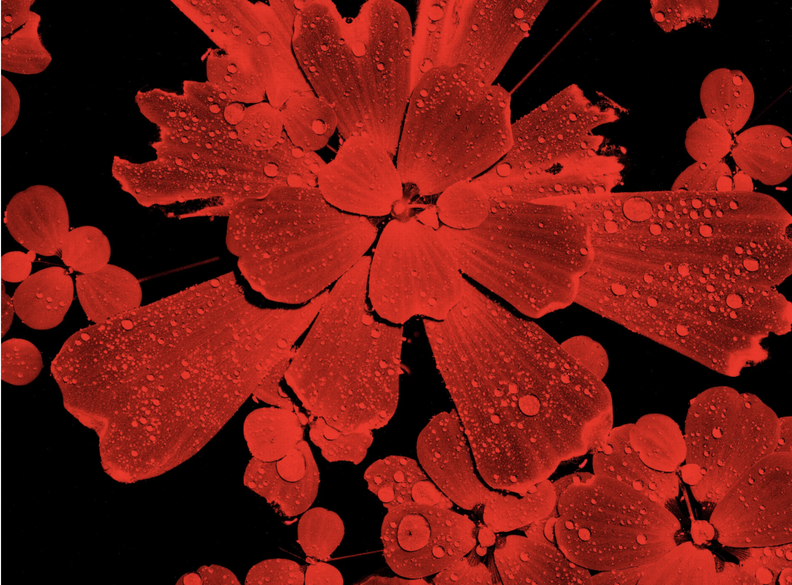

menu
Ben Weiss
Resume
Multimedia
Writing
close
Ben Weiss
Contact:
Writing
Multimedia
Resume
Featured Clips

The Morbid War Over Online Obituaries
WIRED
, Dec. 26, 2021
These researchers are terrified of A.I. Why they think cryptography could keep our future robot overlords in check
Fortune
, May 4, 2023
This artist has generated $3 million in less than 2 years selling artwork on the blockchain. It’s not human
Fortune
, April 25, 2023
In war-scarred Bosnia, tech startups fight massive brain drain
Rest of World
, Sept. 28, 2022
Christian Missionaries Are Turning to the Gospel of Bitcoin in Latin America
Gizmodo
, Sept. 9, 2022
Other Tech Clips
Who is Monkey? The notorious crypto scammer, who drained over $24 million and inspired a legion of copycats, has disappeared
Fortune
, March 1, 2023
Bitcoin Evangelists Want the World's Poor to Use Crypto
Insider
, Aug. 16, 2022
The People Who Are Finding God Through, and in, Bitcoin
Slate
, July 12, 2022
Meet Crackhead Barney, TikTok’s outrageous ambush interviewer
Input
, Dec. 2, 2021
The Venezuelans Trying to Escape Their Country Through Video Game Grunt Work
Slate
, Aug. 25, 2021
Selected NYC Clips
Greenpoint Tenants Fear Eviction After 7-year Court Case with Landlord
Greenpointers
, March 22, 2021
I Took a Double-Decker Tour of NYC During a Raging Pandemic
Bedford + Bowery
, Dec. 18, 2020
As Protests Continue, a DIY Press Corps Redefines the Rules of Journalism
Bedford + Bowery
, Oct. 28, 2020
Greenpoint Studio Spaces Empty as Landlord Offers Few Concessions
Greenpointers
, Sept. 9, 2020
Protestors Continue to Gather in McCarren Park, Months After George Floyd's Death
Greenpointers
, Aug. 18, 2020
How a Photo of Trash in Greenpoint Became a Photo of Seattle's ‘Autonomous Zone’
Greenpointers
, Aug. 13, 2020
North Brooklyn's Open Streets Receive Volunteer Support
Greenpointers
, Aug. 7, 2020
Meet Riley Goodside: The Man Behind the Mask, Goggles, Gloves and Glasses
Greenpointers
, June 26, 2020
Elementary School in Williamsburg Reports Positive Coronavirus Case Just As City Closes Schools
Bklyner
, March 18, 2020
Take A Ride With The Subway's 'Happiest Conductor'
Gothamist
, Aug. 21, 2019